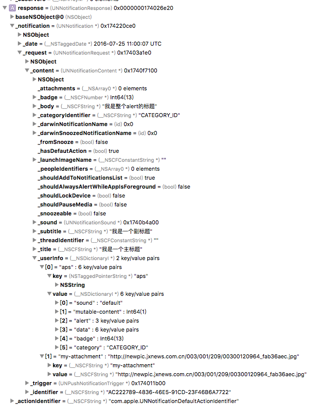
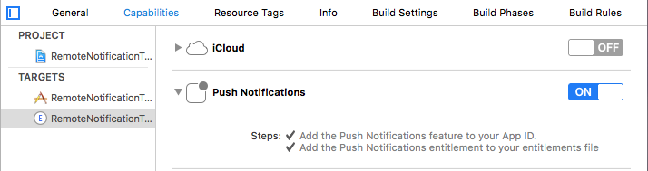
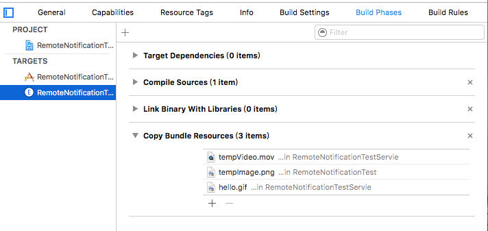
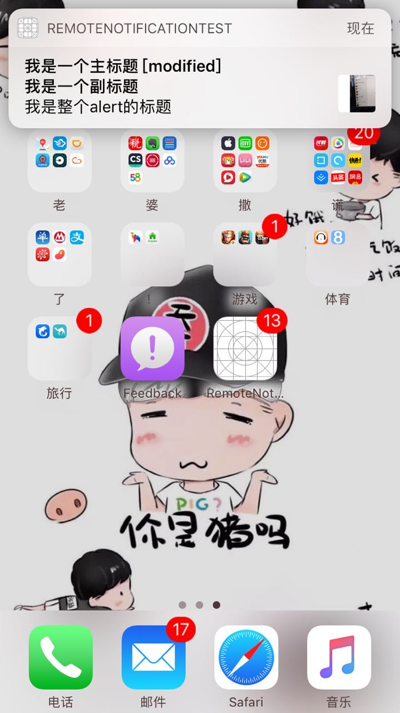
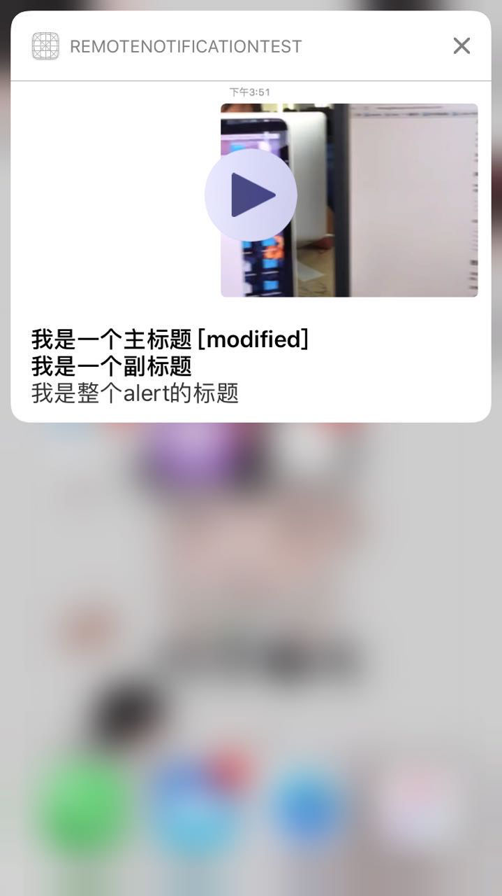

首先介绍如何完成远程推送的前期准备，这里只做简单介绍。
在Mac上生成 Apple推送通知SSL许可证：
登录到 iPhone Developer Connection Portal 并点击 App IDs
创建一个不使用通配符的 App ID 。通配符 ID 不能用于推送通知服务。例如，我们的iPhone程序ID像这样： AB123346CD.com.serverdensity.iphone
点击App ID旁的“Configure”，然后按下按钮生产 推送通知许可证。根据“向导”指导的步骤生成一个签名并上传，最后下载生成的许可证。此步骤在 Apple文档中 也有谈到。
通过双击.cer文件将你的 apsdeveloperidentity.cer 引入Keychain中。
在Mac上启动 Keychain助手，然后在login keychain中选择 Certificates分类。你将看到一个可扩展选项“Apple Development Push Services”
扩展此选项然后右击“Apple Development Push Services” > Export “Apple Development Push Services ID123”。保存为 apns-dev-cert.p12 文件。
扩展“Apple Development Push Services” 对“Private Key”做同样操作，保存为 apns-dev-key.p12 文件。
需要通过终端命令将这些文件转换为PEM格式：
openssl pkcs12 -clcerts -nokeys -out apns-dev-cert.pem -in apns-dev-cert.p12转换得到key的pem：
openssl pkcs12 -nocerts -out apns-dev-key.pem -in apns-dev-cert.p12如果你想要移除密码，要么在导出/转换时不要设定或者执行：
openssl rsa -in apns-dev-key.pem -out apns-dev-key-noenc.pem最后，你需要将键和许可文件合成为apns-dev.pem文件，此文件在连接到APNS时需要使用：
cat apns-dev-cert.pem apns-dev-key-noenc.pem > apns-dev.pem
或者使用有密码的:
cat apns-dev-cert.pem apns-dev-key.pem > ck.pem将此文件保存为一个易记的名字，你有可能以后会用到它。上述步骤同样适合于生成产品许可证。
注：以上使用的证书转换成p12证书使用的密码都是1234
检验证书是否正确的方法：
telnet gateway.sandbox.push.apple.com 2195
上面的命令执行的返回
Trying 17.172.232.226…
Connected to gateway.sandbox.push-apple.com.akadns.net.
Escape character is ‘^]’.它将尝试发送一个规则的，不加密的连接到APNS服务。如果你看到上面的反馈，那说明你的MAC能够到达APNS。按下Ctrl C 关闭连接。如果得到一个错误信息，那么你需要确保你的防火墙允许2195端口。
然后再次连接，这次用我们的SSL证书和私钥来设置一个安全的连接：
openssl s_client -connect gateway.sandbox.push.apple.com:2195 -cert apns-dev-cert.pem -key apns-dev-key.pem当你看到反馈的最下方returnCode=0就成功了
这里给出一个简单的pushme.php文件
<?php
/**
{
"aps":{
"alert":"此处有两个服务器需要选择，如果是开发测试用，选择第二名sandbox的服务器并使用Dev的pem证书，如果是正是发布，使用Product的pem并选用正式的服务器", //消息首页展示内容
"badge":10, //icon上未读消息标示个数
"sound":"default", //推送听到的铃声
"data":{ //推送消息主体，供程序启动时做相应处理
"tid":1000001, //通知Id 做设备打开通知上报数据使用
"id":101, //跳转id [可为课程id/计划id/文章id/ 是web页面默认为0]
"type":0, // 0 系统通知[默认] 1 好友新消息 2 新用户注册 3好友请求 4课程更新
"systype":1, //1 课程 2计划 3文章 4活动 5web页面跳转
"url":"http://www.imooc.com/abc.html" //为4web页面跳转使用 |非4web页面清除url字段
},
"category"=>"CATEGORY_ID" //用来快捷处理消息唯一标示
}
}
*/
$deviceToken= 'ef92d3d412bd4c95d65b07c66170be8*******a6c25e54d643f3f3c707'; //没有空格
$body = [];
$type = 5; //1 课程 2计划 3文章 4活动 5web页面跳转 控制推送内容
///拼接推送字符串
switch ($type) {
case 1:
$content = '从搭建Golang开发环境开始， 一步步介绍Golang系统库之输入输出的功能及特性。结合行数统计及图片读取，在实战中扎扎实实的学习Golang';
$body = array("aps" => array("alert" => $content,"badge" => 10,"sound"=>'default','data'=>array('tid'=>10000,'id'=>492,'type'=>0,'systype'=>$type)));
break;
case 2:
$content = '随着互联网的发展速度迅猛，前端工程师职业越来越火热，想学习Web前端技能吗 ? 该路径从基础知识到实战案例演练，一步步带您快速掌握如何搭建网站静态页面、开发网站交互特效，为您打开WEB前端工程师大门。还在等什么？快来学习吧!';
$body = array("aps" => array("alert" => $content,"badge" => 11,"sound"=>'default','data'=>array('tid'=>10001,'id'=>32,'type'=>0,'systype'=>$type)));
break;
case 3:
$content = 'CodeStriker CodeStriker是一个免费&开源的Web应用程序，可以帮助开发人员基于Web的代码审查。它不但允许开发人员将问题、意见和决定记录在数据库中，还为实际执行代码审查提供了一个舒适的工作区域。 官方网站：http://codestriker.sourceforge.net/index.html 2）RhodeCode Rhode';
$body = array("aps" => array("alert" => $content,"badge" => 12,"sound"=>'default','data'=>array('tid'=>10002,'id'=>2493,'type'=>0,'systype'=>$type)));
break;
case 4:
$content = '高薪捉拿程序大拿';
$body = array("aps" => array("alert" => $content,"badge" => 12,"sound"=>'default','data'=>array('tid'=>27820,'id'=>2493,'type'=>0,'systype'=>$type,'url'=>'http://t.imooc.com')));
break;
case 5:
$alertBody = '我是整个alert的标题';
$title = '我是一个主标题';
$subtitle = '我是一个副标题';
$body = array("aps" => array("alert" =>array("body"=>$alertBody,"title"=>$title,"subtitle"=>$subtitle),"mutable-content"=>1,"badge" => 13,"sound"=>'default','data'=>array('tid'=>10003,'id'=>0,'type'=>0,'systype'=>$type,'url'=>'http://t.imooc.com',"helloKey"=>"helloValue"),"category"=>"CATEGORY_ID"),"my-attachment"=>"http://newpic.jxnews.com.cn/003/001/209/00300120964_fab36aec.jpg");
break;
default:
# code...
break;
}
$ctx = stream_context_create();
//如果在Windows的服务器上，寻找pem路径会有问题，路径修改成这样的方法：
//$pem = dirname(__FILE__) . '/' . 'apns-dev.pem';
//linux 的服务器直接写pem的路径即可
stream_context_set_option($ctx,"ssl","local_cert","ck.pem");
$pass = "1234";
stream_context_set_option($ctx, 'ssl', 'passphrase', $pass);
//此处有两个服务器需要选择，如果是开发测试用，选择第二名sandbox的服务器并使用Dev的pem证书，如果是正是发布，使用Product的pem并选用正式的服务器
// $fp = stream_socket_client("ssl://gateway.push.apple.com:2195", $err, $errstr, 60, STREAM_CLIENT_CONNECT, $ctx);
$fp = stream_socket_client("ssl://gateway.sandbox.push.apple.com:2195", $err, $errstr, 60, STREAM_CLIENT_CONNECT, $ctx);
if (!$fp) {
echo "Failed to connect $err $errstrn";
return;
}
print "Connection OK\\n";
$payload = json_encode($body);
$msg = chr(0) . pack("n",32) . pack("H*", str_replace(' ', '', $deviceToken)) . pack("n",strlen($payload)) . $payload;
echo "sending message :" . $payload ."\\n";
fwrite($fp, $msg);
fclose($fp);
?>直接从网上找到的，没有改太多，但是很好用就是了。当你将ck.pem和pushme.php文件放在同一个文件夹下的时候，修改文件中的token和密码就可以发送到测试手机了。
如下是一个推送Notification打印的时候包含的所有信息
{
UNNotificationResponse: 0x17022b800;
actionIdentifier: com.apple.UNNotificationDefaultActionIdentifier,
notification: {
UNNotification: 0x17022b960; date: 2016-07-25 10:06:13 +0000,
request: {
UNNotificationRequest: 0x174022a60;
identifier: 802B986C-928B-40E9-8AC9-B6649DE5BC2C,
content: {
UNNotificationContent: 0x1740e9780;
title: 我是一个主标题,
subtitle: 我是一个副标题,
body: 我是整个alert的标题,
categoryIdentifier: CATEGORY_ID,
launchImageName: ,
peopleIdentifiers: (),
threadIdentifier: ,
attachments: (),
badge: 13,
sound: {
UNNotificationSound: 0x1740bde20
},
hasDefaultAction: YES,
shouldAddToNotificationsList: YES,
shouldAlwaysAlertWhileAppIsForeground: NO,
shouldLockDevice: NO,
shouldPauseMedia: NO,
isSnoozeable: NO,
fromSnooze: NO,
darwinNotificationName: (null),
darwinSnoozedNotificationName: (null),
trigger: {
UNPushNotificationTrigger: 0x170000ff0;
contentAvailable: NO,
mutableContent: YES
}
}
}
}从打印信息中我们没有看到自定义的信息，是不是出了问题。打一下断点调试一下，原来userInfo没有打印出来，Why,应该被打印的信息为什么被省略了。如下图

在上面的图片中就包含了我们自定义的信息。但是这里有一个问题，就是NotificationContent对象会向UserInfo这个对象中做检索，将里面对应key的信息提取到上层中直接展示。这一点在代码处理上也得到了验证。
到目前为止，工程已经调试完毕了。但是现在想尝试一下NotificationServie是如何被触发的，这样就可以自定义相关的notification第一个界面的展示了。在此之前 你需要做如下的操作，

测试的文件有image,gif,movie，但这些资源文件都是本地的（文件添加在extension中的bundle中）。刚才又测试了一下网络的数据传输，发现一个坑。在Apple的attachment附件api定义中附件的展示是一个url,也就是说当我拿到了一个例如网络图片的data数据的时候还是不能直接展示，需要将data存在在一个文件夹下生成对应的url，才能展示。但是extension不能操作APP的沙河，存储数据就只能写在APP group这个数据共享中，但简单的存储数据违背了app group共享数据的初衷。还有就是现在beta测试中不能同时打开push notification和App group两个capabilities，否则远程推送不能送达。
@available(iOS 10.0, *)
public class UNNotificationAttachment : NSObject, NSCopying, NSSecureCoding {
// The identifier of this attachment
public var identifier: String { get }
// The URL to the attachment's data. If you have obtained this attachment from UNUserNotificationCenter then the URL will be security-scoped.
public var url: URL { get }
// The UTI of the attachment.
public var type: String { get }
// Creates an attachment for the data at URL with an optional options dictionary. URL must be a file URL. Returns nil if the data at URL is not supported.
public convenience init(identifier: String, url URL: URL, options: [NSObject : AnyObject]? = [:]) throws
}
// Key to manually provide a type hint for the attachment. If not set the type hint will be guessed from the attachment's file extension. Value must be an NSString.
@available(iOS 10.0, *)
public let UNNotificationAttachmentOptionsTypeHintKey: String
// Key to specify if the thumbnail for this attachment is hidden. Defaults to NO. Value must be a boolean NSNumber.
@available(iOS 10.0, *)
public let UNNotificationAttachmentOptionsThumbnailHiddenKey: String
// Key to specify a normalized clipping rectangle to use for the attachment thumbnail. Value must be a CGRect encoded using CGRectCreateDictionaryRepresentation.
@available(iOS 10.0, *)
public let UNNotificationAttachmentOptionsThumbnailClippingRectKey: String
// Key to specify the animated image frame number or the movie time to use as the thumbnail.
// An animated image frame number must be an NSNumber. A movie time must either be an NSNumber with the time in seconds or a CMTime encoded using CMTimeCopyAsDictionary.
@available(iOS 10.0, *)
public let UNNotificationAttachmentOptionsThumbnailTimeKey: String增加一个resourceData会更好，我是这样想的。这也是后话了，现在我使用的是Xcode beta 3和ios 10 beta 3。希望在之后会有改进
先让我们看一下资源文件在notification中是怎样的变现。这里根据WWDC的视屏，在target中添加了

三个样式的资源，让我们看一下实现。
override func didReceive(_ request: UNNotificationRequest, withContentHandler contentHandler:(UNNotificationContent) -> Void) {
self.contentHandler = contentHandler
bestAttemptContent = (request.content.mutableCopy() as? UNMutableNotificationContent)
if let bestAttemptContent = bestAttemptContent {
// Modify the notification content here...
bestAttemptContent.title = "\(bestAttemptContent.title) [modified]"
// let path = Bundle.main.pathForResource("tempImage", ofType: "png")
// let path = Bundle.main.pathForResource("hello", ofType: "gif")
let path = Bundle.main.pathForResource("tempVideo", ofType: "mov")
let pathURL = URL.init(fileURLWithPath: path!)
do {
let attachment = try UNNotificationAttachment(identifier: "movie",url: pathURL,options: nil)
bestAttemptContent.attachments = [ attachment ]
} catch {
print("出错了")
print(error)
}
contentHandler(bestAttemptContent)
}
}下面看一下展示


远程推送功能和API感觉上还是没有完善。等待最新的xcode beta版本出来，并作出测试。